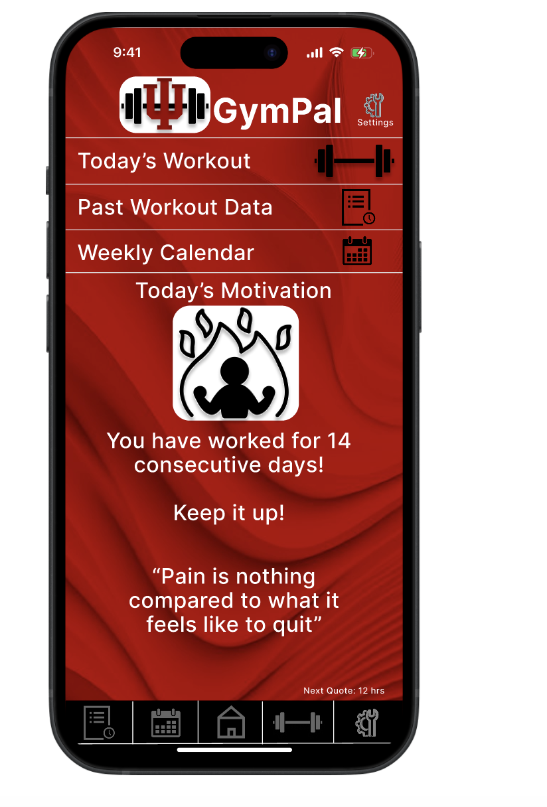

IU GymPal
A fitness app prototype created for Indiana University students, designed to make fitness accessible, smart, and motivational through AI-driven suggestions and progress tracking.

Project Overview
IU GymPal is an AI-powered appplication tailored to support students in developing healthy fitness habits. From guided workouts to form tutorials and progress visualizations, the app makes it easier for students of all fitness levels to engage in personal wellness.
My Role
- Led interface design and prototyping in Figma
- Conducted user interviews with over 20 Indiana University students
- Designed intuitive navigation patterns for workout flow
Key Features
- Personalized workout recommendations powered by AI
- Step-by-step form demonstrations and tutorials
- Tracking tools for workout consistency and progress